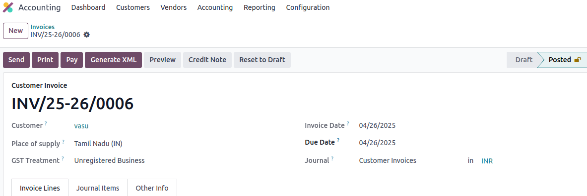
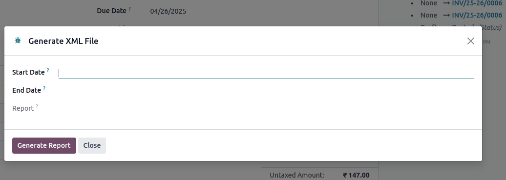
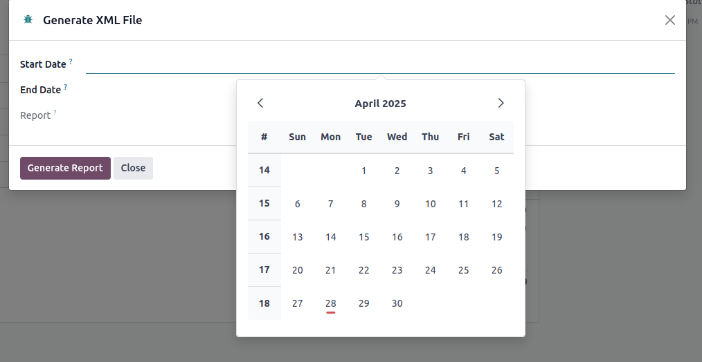
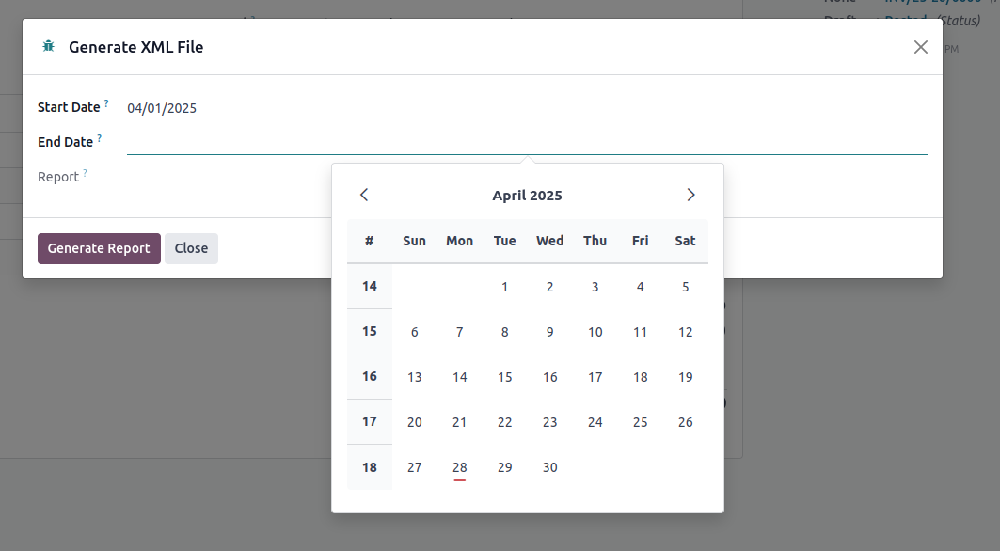
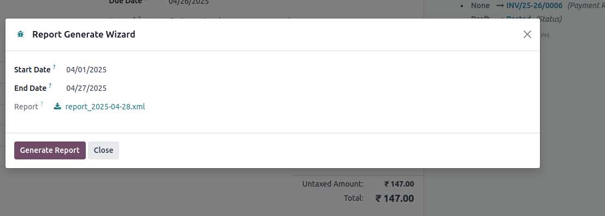
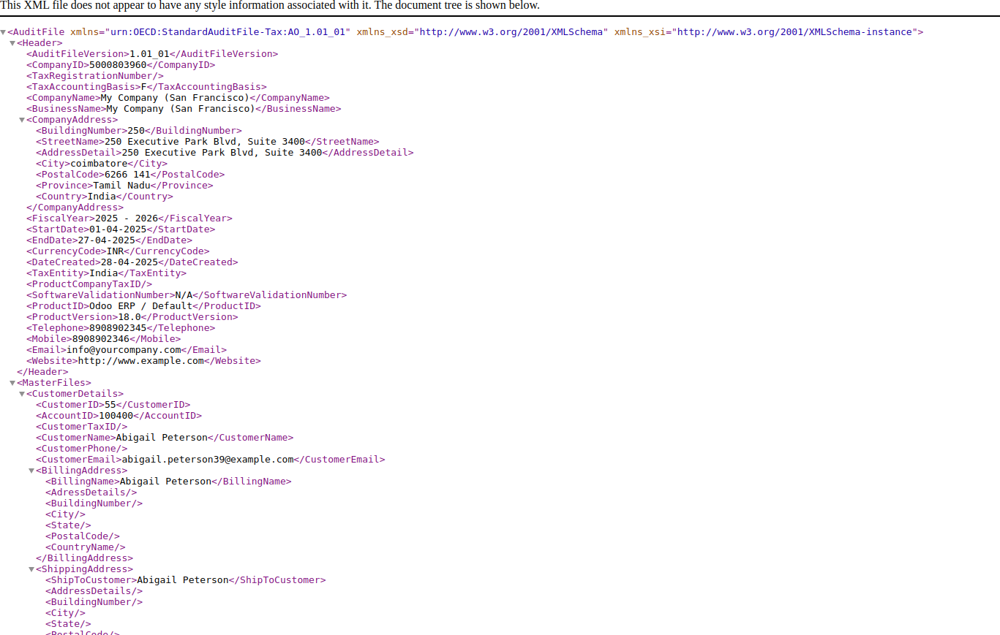

🗂️ Module Overview: Generate XML File for Tax Office Submission
This module allows users to generate a structured XML file from sales invoices and transactions,
intended for submission to Tax Authorities as per government regulations.
🚀 Why Use This Module?
- Meet government and tax office compliance requirements easily.
- Automate the XML file generation without manual entry.
- Send XML directly as an email attachment if needed.
✅ Key Features
- 🧾Generate XML Files
Convert sales invoice and transaction data into an official XML file format.
- 📤Send XML Files via Email
Attach the generated XML file directly in an email to the Tax Office (optional feature).
- 🔒Access Control
Only authorized users can generate and send XML files.
- 📚Log and Track
Keep a history of generated files and sent emails in the Chatter for traceability.
📌 How It Works
- User opens the invoice.
- User clicks on "Generate XML" button/wizard.
- The system generates an XML file based on the invoice details.
- The user can download or send it via email to the Tax Authority.
📸 Screenshots
Invoice Form with Generate XML Option Button

open the XML Generation Wizard

Enter the Start Date

Enter the End Date

Download the XML File

XML File
